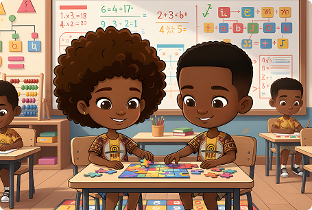

Ludicidade
Dinâmicas que tornam o aprendizado prazeroso, explorando o movimento, o ritmo e a cooperação entre as crianças.
Saiba maisA percussão Afro-baiana como estratégia de computação desplugada para o ensino do pensamento computacional.

Dinâmicas que tornam o aprendizado prazeroso, explorando o movimento, o ritmo e a cooperação entre as crianças.
Saiba maisDecomposição, reconhecimento de padrões, abstração e algoritmos — os quatro pilares do pensamento computacional em ação.
Saiba maisA herança ancestral Afro-baiana serve de contexto cultural para ensinar lógica, ritmo e sequências de forma significativa.
Saiba mais


Uma metodologia de ensino que introduz conceitos de ciências da computação, algoritmos e lógica — como números binários e criptografia — sem utilizar computadores ou dispositivos eletrônicos.

Professores e alunos
Divididos em 4 aulas, os materiais disponibilizados dispõem de atividades desplugadas que, através da intersecção entre os pilares e os elementos do pensamento computacional, compõem dinâmicas lúdicas e ações interdisciplinares.
"Ver o resultado dessas atividades foi uma das experiências mais gratificantes da minha carreira. Sinto uma alegria imensa por ter proporcionado esse momento; os resultados foram além do aprendizado técnico."Deize Oliveira — Musicoterapeuta
Conheça a origem do samba reggae, sua herança cultural Afro-baiana e como ele conecta ritmo, história e identidade.
Ver mais →Assista ao mini documentário que mostra a aplicação das atividades e a riqueza da percussão Afro-baiana.
Ver mais →Veja os registros fotográficos e os resultados das oficinas realizadas com crianças e adolescentes.
Ver mais →